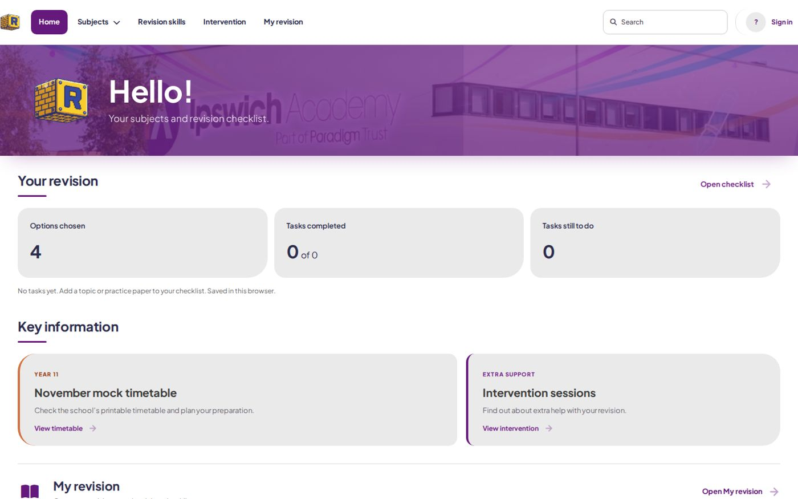
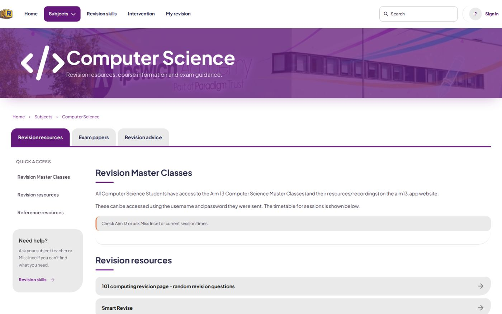
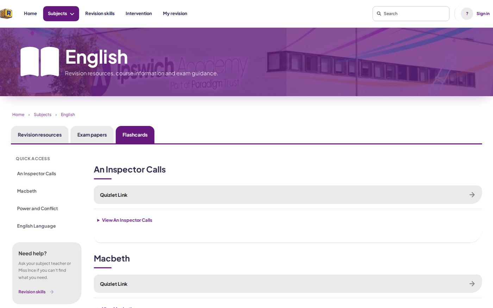
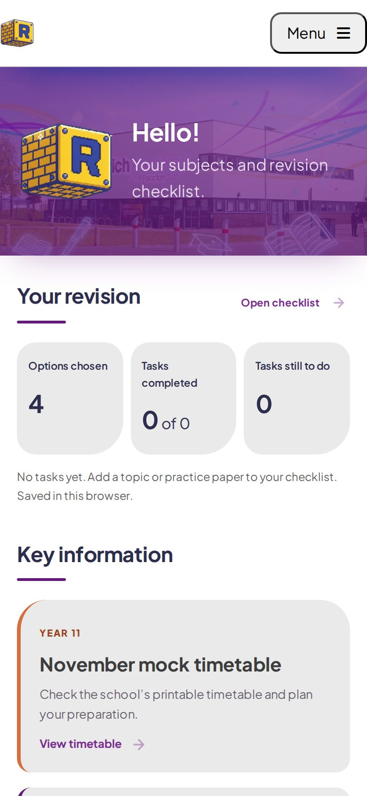

Set up around you
The first time you visit, you pick your four options and your science course. Maths, English and Science are added for you, and it remembers.
A rebuild for Ipswich Academy
A full overhaul of the school’s revision site.

It had no accounts, and it showed you everything, whether it was yours or not. Design differed between each department. I rebuilt it from scratch so it’s calmer to look at and set up around your own subjects.
The first time you visit, you pick your four options and your science course. Maths, English and Science are added for you, and it remembers.
Your subjects, a checklist of your own, and the important stuff like the mock timetable and intervention sessions.
Revision resources, exam papers and advice in tabs, with a handy sidebar and a note on who to ask for help. English even has flashcards.
Search across everything, and pin the subjects you use the most.
Sign in with your school account and everything lives in one place. Without one, it saves to your browser.
Each department gets an editor, so teachers can keep their own page up to date without asking me.
* Accounts aren’t live on the site yet. For now, your choices are saved in your browser.
** The editor is built, but teachers can’t use it yet.


Which subjects you have to take, which science courses go together, how many options you pick: it’s written down once, and both the site and the account server read it.
Cards, clear headings and one purple, so a page full of links doesn’t feel like a wall.
There’s a skip-to-content link, proper headings, and everything works with a keyboard.
Everything stacks into one column, and the tabs slide sideways so nothing gets squashed.
Visit the live site